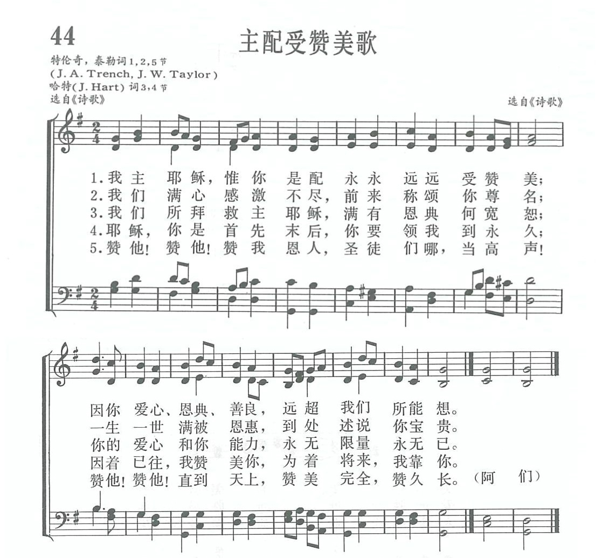

|
|
|
|
Jesus, Thou alone art worthy |
|
|
https://www.zanmeishige.com/tab/13675.html?songbook=1&index=44
 |
|
|
|
|

https://youtu.be/Uf3ATiYguj8 - Jesus Thou alone art worthy
https://youtu.be/qyzIG8Kjy0s
| Text: | Jesus, thou alone art worthy |
| Author: | J. A. Trench |
| Short Name: | Mrs. J. A. Trench |
| Full Name: | Trench, J. A., Mrs., 1843-1925 |
| Birth Year: | 1843 |
| Death Year: | 1925 |
Maiden name Janetta W. Taylor, married John Alfred Trench.
第44首 主配受赞美歌 Jesus Thou alone art worthy _J．A．Trench
经文：“我们的主，我们的神，你是配得荣耀、尊贵、权柄的……”(启4：11)
这首《主配受赞美歌》的歌词由二人合写：一、二、五节是特伦奇(J．A．Trench)和泰勒(J．w．Taylor见第25首注③)写的；而三、四节是哈特(J．Hart)所写。今介绍哈特事略于下：
哈特(J．Hart，1712一1768)①生于英国伦敦。他曾在一个小镇的学校内教语文。他将一生中最好的年华消磨在反对宗教和反对圣经上。他到教堂去的目的并非是做礼拜，而是去找岔子，去收集让他写文章反对宗教的材料。他不但自己不信宗教，还叫别人也不信。他曾写小册子《不讲道理的宗教》以侮辱约翰．卫斯理。由于他在学校里及镇上如此讨人厌，被公众驱逐出镇，他只得回到家乡伦敦。
1757年他45岁时，在一个星期天的下午，到一个摩拉维亚(Moravian)教堂去，准备再寻找反对宗教的材料。那天牧师讲的道是启示录第3章第10节“你既遵守我忍耐的道，我必在普天下人受试炼的时候，保守你免去你的试炼”(启3：1O)。圣灵在他身上作了奇妙的工作。他后来回忆说：“我好容易回到了家，立刻伏倒跪在神面前痛心悔改，当时，好像一副沉重的担子从我肩上掉了下来。”
从此以后，他再也没有写过反对宗教的文章，相反地用了二年时间写就一本赞美诗，于1759年出版，然后，他奉献自己从事布道。当他于1767年归天时，有二万人左右参加他的葬礼。
①《新编》内有两位哈特。请参阅作者索引。
https://www.xueshengshi.com/?p=5339